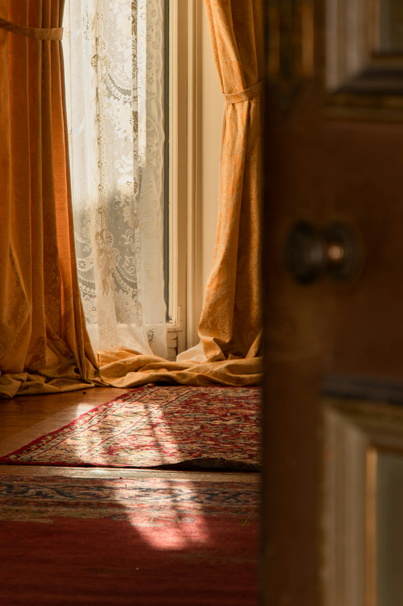
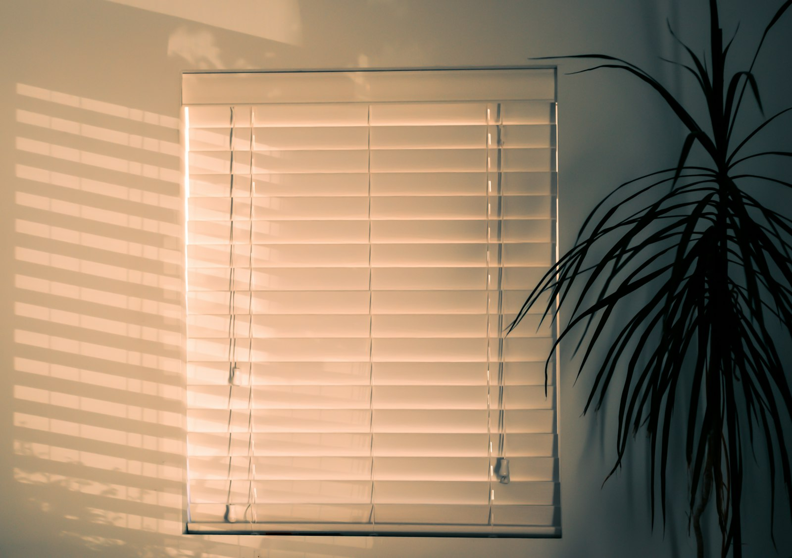
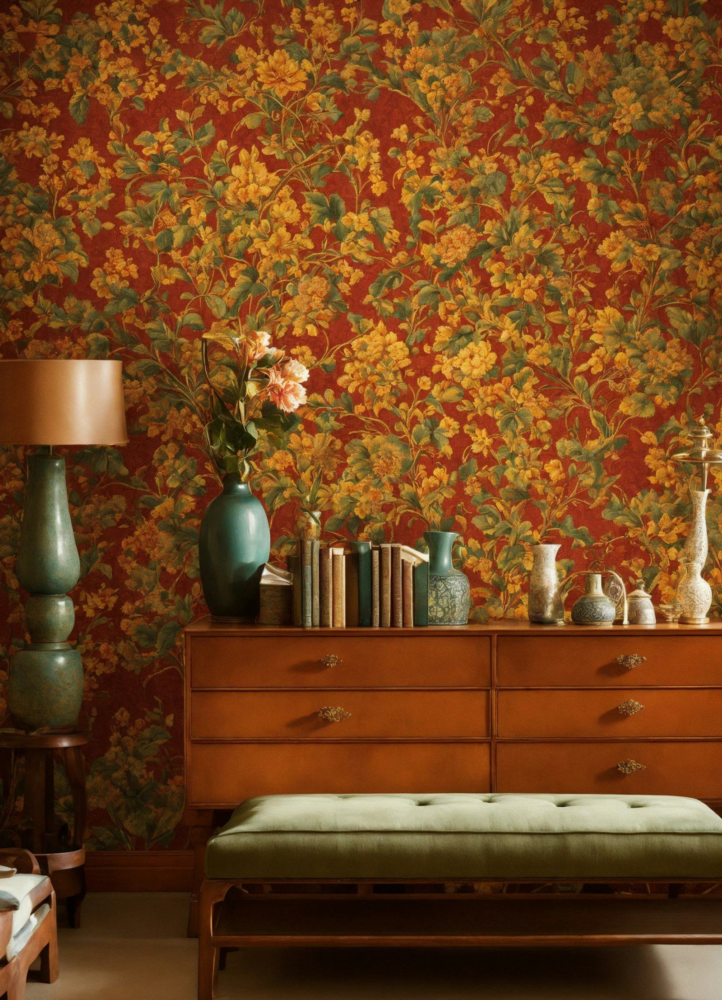

Price guide · Honest numbers
What curtains, blinds and wallpaper cost in Hyderabad.
The honest answer is: it depends on the fabric, the size of your window or wall, and the finish you choose. This page shows the typical configurations we quote for most often — and the firm price always follows a free measurement at your home, with no obligation to buy.

Why ranges, not rates
Every price starts at the fabric wall.
A window can be dressed for a little or for a lot, and the difference is almost always the cloth. A sheer voile and a three-pass blackout for the same window are different jobs — different fabric, different lining, different heading. The same goes for blinds and wallpaper: a roller blind and a wooden venetian, a Nilaya paper and an imported Italian print, simply cost different amounts.
So instead of pretending one number fits all, the tables below show the configurations people ask about most. Treat them as a map of the territory, not a bill — the exact figure comes after we have seen your windows, and the visit that produces it is free.
Curtains — per window
Fabric, stitching and fitting for a typical window. Lining, tracks and rods are quoted separately if you want them. See the curtains page for the full range.
| Configuration | What it includes | Price per window |
|---|---|---|
| Sheer — voile, organza or leno | Fabric, hand-stitched heading, fitting | TODO-CLIENT |
| Printed cotton — Bhuj & Bagh | Fabric, lining option, stitching, fitting | TODO-CLIENT |
| Jacquard — Erode and Salem looms | Fabric, lined, hand-stitched heading, fitting | TODO-CLIENT |
| Blackout — three-pass | Blackout fabric, lining, stitching, fitting | TODO-CLIENT |
| Motorised track add-on | Quiet motor, remote, installed by our own electrician | TODO-CLIENT |
Blinds — per square foot
Made to measure, so blinds are priced by area. Measure the window, multiply, and you have a working estimate before we even visit. More on the blinds page.
| Type | Best for | Price per sq ft |
|---|---|---|
| Roller — blackout or solar | Bedrooms, glare control | TODO-CLIENT |
| Roman — cotton or cotton-linen | Reading corners, softer rooms | TODO-CLIENT |
| Vertical PVC | Large spans, offices | TODO-CLIENT |
| Wooden venetian | Studies, firm light control | TODO-CLIENT |
| Honeycomb / cellular | Insulation, heat and sound | TODO-CLIENT |
Wallpaper — per roll
Roll coverage varies by brand and pattern repeat, so the number of rolls depends on your wall — part of the free site survey. Ranges on the wallpapers page.
| Range | Notes | Price per roll |
|---|---|---|
| Asian Paints Nilaya | Wide range, easy to re-order later | TODO-CLIENT |
| Marshalls — India & UK | Established designs, durable papers | TODO-CLIENT |
| Textured & embossed | Adds depth to a single feature wall | TODO-CLIENT |
| Imported — Italy, Germany | By special order, longer lead time | TODO-CLIENT |
How to read these tables: prices depend on the fabric or paper you choose, the size of the job, and the finish — lining, heading style, tracks, rods and installation all move the figure. That is why the numbers here wait for the client, and why the firm quote comes only after a free measurement at your home. There is no obligation attached to the visit or the quote — if the number doesn't suit you, you owe us nothing.

How quoting works
From a WhatsApp message to a firm number.
-
Tell us what you're dressing
A WhatsApp message or a call — which rooms, roughly how many windows or walls, and what you have in mind.
-
Free measurement visit
We come to your home, measure every window and wall, and bring swatches so you can choose against your own light and furniture.
-
Firm written quote
You get one firm price per window, per square foot or per roll — itemised, so you can see exactly where the money goes.
-
Stitched and installed by us
Accept the quote and our own tailors cut, stitch and install — no outside workshop, no middleman margin in your bill.

What moves the number
Three things decide your quote.
First, the material. Fabric is sold by the metre and wallpaper by the roll, so a room in cotton sheers and the same room in lined Erode jacquard are two different quotes. Second, the size — a floor-to-ceiling drop uses more cloth than a sill-length one, and a full feature wall takes more rolls than a headboard panel. Third, the finish: blackout lining, hand-stitched headings, brass or walnut tracks, motorisation.
None of this is decided over the phone. It is decided at your window, with swatches in hand, during the free measurement — and written down before anyone asks you for anything.


Questions
Asked across the counter, answered here.
Is the measurement visit really free?
Yes. We come to your home, measure the windows or walls, and discuss fabrics and finishes — all free, and with no obligation to buy. You only ever pay after you have seen and accepted a firm written quote.
Why can't you give one fixed price online?
Because the price depends on three things we cannot see from here: the fabric you choose, the exact size of your window or wall, and the finish — lining, heading style, tracks or rods. A number quoted without measuring would be a guess, and we would rather give you a firm figure after the free home visit.
How does in-house stitching keep costs down?
Our own tailors cut, stitch and install everything we sell — curtains, blinds and more — under one roof in Ameerpet. There is no outside workshop margin in the middle, alterations are handled by the same team, and if a drop is a finger off, we fix it ourselves.
What about warranty and after-sales support?
Warranty support runs through the shop. If something is wrong with the stitching, the fitting or a mechanism, you call us — not a call centre — and the same team that installed it comes back to set it right.
Ready when you are
Get your firm quote.
Send a photo of the window or wall on WhatsApp for a quick estimate, or call and we'll come measure — the visit is free and the quote carries no obligation.